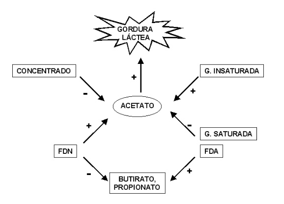

Bioquímica do Leite
Introdução
A glândula mamária é um dos orgãos mais diferenciados e metabolicamente ativos do corpo animal. Sua diferença não confere nenhuma vantagem especial a este, mas sim, ao contrário, é altamente demandante do mesmo, quando encontra-se em plena atividade. O início da lactação é marcado por inúmeras alterações no metabolismo, o qual volta-se quase que totalmente para esta glândula.
A redistribuição do suprimento de sangue é marcada pelo incremento na taxa metabólica, e também pelo aumento na demanda de nutrientes e energia para o suprimento da glândula. Por outro lado, a inabilidade do animal em ajustar rapidamente seu metabolismo deu à secreção de leite, em detrimento de outros processos metabólicos.
O aporte de nutrientes para o processo de síntese dos componentes do leite são de duas origens, o endógeno, pela mobilização de reservas orgânicas, e o exógeno, dependendo da composição alimentar, como rações, forrageiras e pastagens.
Detalhes
O leite é composto por 100 mil tipos de moléculas diferentes, o que lhe confere um alto grau de complexidade, pois cada uma destas moléculas apresenta uma função específica, propiciando nutrientes ou proteção imunológica para o neonato. Contudo, sob um aspecto alimentício, o leite assume papel importante na dieta, devido ao alto valor biológico de seus nutrientes (proteínas, lipídios, glicídios, vitaminas e minerais), além de permitir grande variedade de processamentos industriais de diversos produtos, e participar da formulação de outros tantos na alimentação humana.
Colostro
O colostro constitui a primeira secreção do úbere após o nascimento da criança (ou filhote). Similar ao leite, possui uma composição química distinta deste por apresentar maior teor de globulinas, principalmente de anticorpos, nitrogênio, gordura, e ferro (17 vezes maior que no leite), e menor teor de lactose.
O leite, por sua vez, constitui uma secreção aquosa polifásica instável, contendo glóbulos de gordura emulsionada (106 /mL), micelas de caseína (1012 /mL), proteínas dissolvidas, lactose e sais minerais. De um modo geral o colostro possui maior teor de proteínas e menor de açúcares, em contraposição ao leite.
Proteínas
As principais proteínas lácticas incluem a caseína (76 %, 20 variantes existentes, sendo \(\alpha\), \(\beta\), \(\gamma\), e \(\kappa\) as principais), proteínas do soro, como globulinas (16 %), albuminas (1 %), e proteínas de menor teor significativo, como lactoferrinas, transferrinas e lipases.
As micelas de caseína são formadas por polimerização de variantes da caseína através de ligações de fosfato de cálcio. Por apresentar-se como um conjunto diversificado e com graus distintos de polimerização, a caseína não apresenta uma massa molecular específica.
O leite pode ser processado de maneiras distintas, das quais são clássicas a coagulação, o coalho e a fervura, na modificação de suas propriedades biofísicas. Durante a coagulação do leite ocorre a formação de um gel devido à ruptura térmica de ligações químicas nas caseínas. Já na formação do coalho, desnaturação e precipitação de caseínas devido à redução do pH da suspensão o qual, ao atingir o valor de 4,6, neutraliza as cargas elétricas da estrutura protéica, levando a mesma à coagulação.
Esse coágulo permite uma interação entre as micelas de caseína degradada com consequente hidrólise das mesmas pela atividade de enzimas proteolíticas microbianas. A fervura do leite, por sua vez, decorre da desnaturação de caseínas, aumento de acidez, aumento de interações proteína-lactose, e alteração de equilíbrio iônico (precipitação de fosfatos).
Existem aproximadamente 20 atividades enzimáticas diferentes no leite. Essas enzimas estão associadas ao soro, gordura, caseínas e lipoproteínas. Os exemplos mais comuns são o conjunto de fosfatases, amilases, anidrase carbônica, lactases, lipases e esterases (relacionadas ao ranço), lisozimas, peroxidases, e proteases.
Aplicação
Produção láctea em ruminantes
Os lipídios do leite constituem glóbulos de gordura revestidos de membrana contendo, pricipalmente, triglicerídios (53 %), fosfolipídios (21 %), e ácidos graxos livres, tais como o oléico, o palmítico e esteárico. O ácido acético e o ácido butírico são os principais precursores da gordura na glândula mamária, tomando-se por base a absorção dos ácidos graxos voláteis (AGV) pela mucosa das papilas ruminais.
O ácido acético é a principal fonte de energia para os tecidos. Já o ácido propiônico é preservado para a biossíntese de glicose e galactose para a obtenção da lactose. A proporção de ácidos graxos é definida pela relação entre concentrado e volumoso, a qual também determina a predominância de determinados microrganismos e suas rotas metabólicas no ambiente ruminal. Alguns subprodutos do acetato e butirato (corpos cetônicos) também podem ser utilizados como precursores da síntese de gordura láctea.
Antes ser absorvidas, o ambiente ruminal realiza uma hidrogenação microbiana sobre a estrutura dos ácidos graxos ingeridos, cuja natureza químca é insaturada devido ao grande teor de matéria vegetal presente. Os triglicerídios são transportados pelo sangue até a glândula mamária, onde são enzimaticamente trabalhados e absorvidos. Os ácidos graxos de cadeia longa podem ser transferidos diretamente do sangue para a glândula, mas a maioria dos ácidos graxos encontrados no leite são de cadeia curta, com menos de 16 carbonos.
A glicose é sintetizada através da gliconeogênese hepática a partir de propionato, aminoácidos e glicerol, sendo o principal precursor da síntese de lactose (60-70 %). A lactose contribui com 50 % do volume total de leite devido à sua capacidade osmótica, fazendo com que a água passe do sangue para o lúmen.
A glicose é sintetizada através da gliconeogênese hepática a partir de propionato, aminoácidos e glicerol, sendo o principal precursor da síntese de lactose (60-70 %). A lactose contribui com 50 % do volume total de leite devido à sua capacidade osmótica, fazendo com que a água passe do sangue para o lúmen.
Dessa forma, cada grama de lactose arrasta 10 vezes seu volume em água. Assim, a enzima lactose sintetase (dois domínios, um de alfa-lactalbumina, e outro de galactosiltransferase) apresenta uma importante função no controle do volume do leite.
Proporcionalmente, existem 5 gramas de glicose, 14 mg de glicose, 12 mg de galactose, 5 mg de mioinositol, 11 mg de N-acetilglicosamina, 5 mg de ácido N-acetilneuramínico, e 0,1 mg de oligossacarídios de lactose, em cada litro de leite.
Existem vários minerais traço no leite, sendo os principais os necessários para o desenvolvimento do esqueleto do bezerro. Esse minerais envolvidos no crescimento dos ossos são, principalmente, o cálcio, o fósforo e, menor escala, o magnésio. Curiosamente, o conteúdo desses minerais é bastante aumentado no leite quando comparado à concentração sanguínea, cerca de 10 vezes mais. Isso é possível porque o cálcio e fósforos estão normalmente ligados aos aminoácidos das moléculas de caseína.
O leite também possui um conjunto de vitaminas essenciais exigido pela dieta do recém-nascido. A maioria das vitaminas são do complexo B, sendo sintetizadas pelos microrganismos do rúmen. As vitaminas lipossolúveis (A, D, E e K) estão associadas aos glóbulos de gordura do leite.
Fatores que afetam a composição lipídica do leite
Além de raça e perfil genético, a gordura láctea pode ser manipulada pela dieta do animal. É conhecido, por exemplo a relação inversamente proporcional entre o teor de ácido acético e o teor de lipídeos do leite, devido a baixa fermentação de fibras que ocorre em função de reduzido pH em presença de grandes quantidades de concentrados na dieta.
Essa redução no teor de ácido acético, precursor da síntese de ácidos graxos, em relação ao propiônico, limita a produção de gordura quando se encontra pela metade em relação ao propiônico. Nesse caso, a recomendação dietética estabelece um limite máximo de 60 % de concentrados.
A presença de fibras efetivas, normalmente fibras de detergente neutro com mais de 4 cm de comprimento e que estimulam a produção de saliva e, por consequência, a ruminação, também contribuem para uma maior produção de gordura láctea quando oferecidas a mais de 28 % de matéria seca. O tipo de concentrado, cujo teor de amido se encontra também inversamente disposto à gordura láctea final, o fornecimento exógeno de gordura, protegida ou não com revestimento de formaldeído, o emprego de aditivos alcalinizantes (bicarbonatos, aumentam o acetato), de modificadores ruminais (monensina, que inibe a produção de acetato), bem como diferenças de sazonalidade e estresse térmico, também afetam diretamente a produção lipídica do leite.
Outro fator importante a considerar é a presença de ácidos graxos trans (AGT) aumentados em dietas redutoras de gordura láctea. Esses isômeros trans podem ser produzidos por biohidrogenação ruminal ou hidrogenação química de óleos oferecidos, agindo então como antimicrobianos de bactérias celulolíticas.
Em resumo, para que haja redução no teor lipídico do leite é necessário que o ambiente ruminal esteja alterado pela falta de fibra ou excesso de grãos, ou que haja teores significativos de ácidos graxos insaturados na dieta, produzindo AGT por biohidrogenação incompleta. A figura abaixo fornece um panorama geral para a variação manipulável da gordura láctea.
Fatores que afetam a composição proteica do leite.
Diferentemente da gordura, estratégias que visem aumentar o teor protéico do leite também acabam por aumentar a produção total da emulsão. Entre essas técnicas destacam-se o fornecimento de nitrogênio não protéico na dieta, de aminoácidos essenciais, de aminoácidos limitantes (metionina e lisina, 1:3), de glicídios fermentáveis (amido, açúcares solúveis, pectina e fibra digestível), que aumentam o metabolismo ruminal e, consequentemente, a produção de proteína microbiana, e o fornecimento de proteína não degradável e de aminoácidos protegidos.
